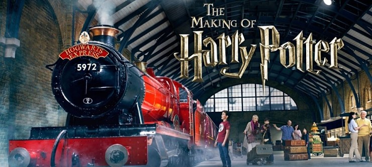
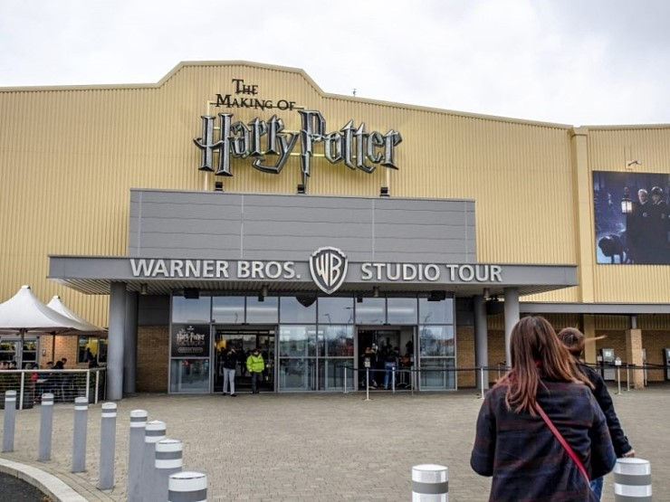
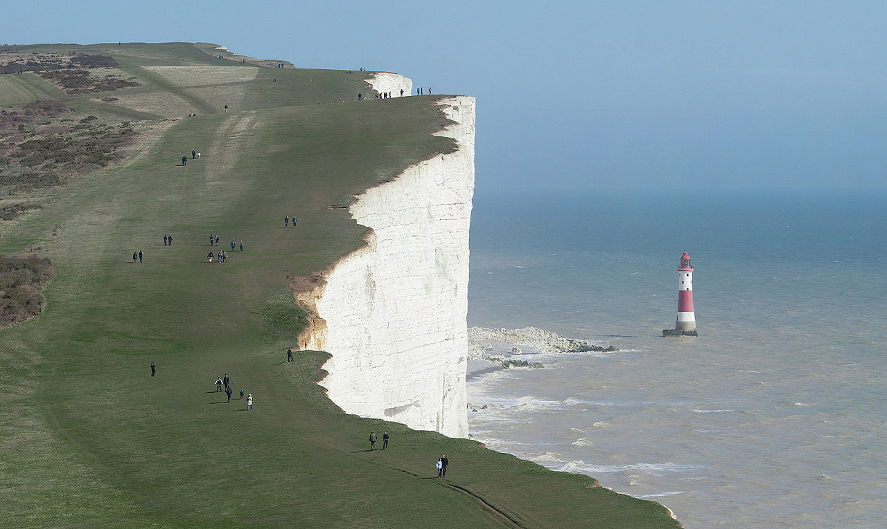
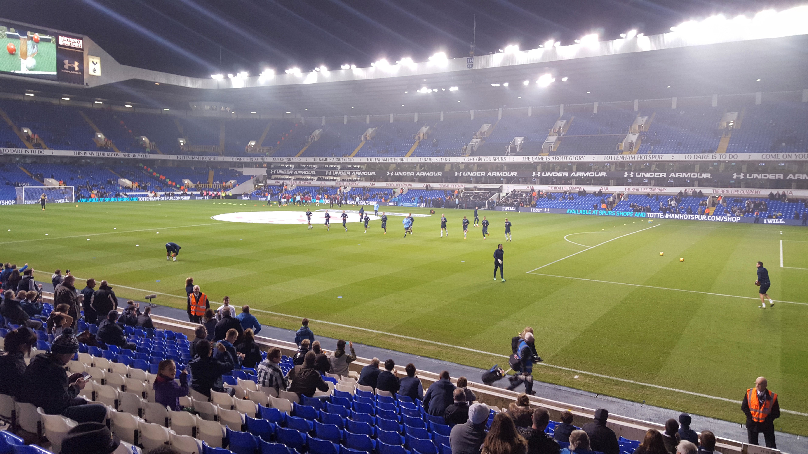

런던아이:런던의 빅벤의 맞은편에 위치한 런던아이는 영국의 시내를 한눈에 볼 수 있는 초대형 관람차 크기가 135m가 넘는 크기라서 위로 올라갈수록 런던시내가 한눈에 보이며 30분동안 관람차안에서 런던의 풍경을 즐길 수 있고 화창한 날이라면 런던의 외곽까지 볼 수 있다. 인기가 많기 때문에 미리 예약필수

해리포터스튜디오:해리포터 작품속에 그대로 등장하는 세트, 의상을 재현해 놓은 곳

대영박물관:세계 3대 박물관,무료입장,가장 인기 있는 관은 이집트관으로 스핑크스부터 미라, 상형문자가 적힌 비석등등

코벤트 가든은 예전에는 야채시장 지금은 다양한 카페와 아기자기한 상점들로 아기자기한 쇼핑 좋아하시는 분들에게 알맞는곳 아티스트들이 많이 활동하고 있어서 다양한 물건을 판매하고 작품을 감상하는 재미까지 있다.
런던 근교 여행으로 가장 유명한 세븐시스터즈는 7개의 깎아진 듯한 봉우리로 이루어진 해안 절벽입니다 세븐시스터즈는 런던에서 브라이턴행 기차를 타면 약 1시간 이내에 도착할 수 있다.

축구를 좋아하는 사람이라면 뺴놓을수 없는 경기직관! 런던에는 아스날,토트넘,첼시가 있다. 위에 사진은 아스날의 경기장과 화장실이다 아스날을 표값이 제일 비싸다

이어서 토트넘, 첼시 토트넘에는 한국선수인 손흥민이 뛰고 있는 소속팀이다.
런던 여행 단점이라 하면 물가가 비싸다는걸 뽑을수 있다. 그치만 그만한 값어치를 하기 때문에 추천 !!